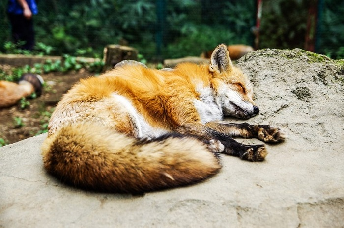
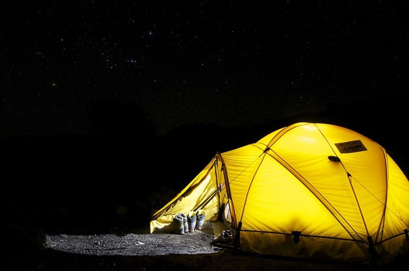
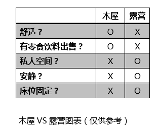

想去爬乞力马扎罗山的童鞋，一定都会先对自己在山上的衣食住行进行研究。登乞力马扎罗山是一个比较艰苦的过程，如果没休息好，我们的第二天的身体状况一定会受到直接影响，今天我们就来聊聊在乞力马扎罗山上的住。
小爱曾经有幸对乞力马扎罗山的一位当地的登山向导进行了一次访谈。据他说，我们登山者在乞力马扎罗山主要有两种住宿可以选择：一种是木屋，一种是帐篷。
关于木屋
乞力马扎罗山目前在使用的上山路线一共有七条，但只有一条路线上的营地可以享受木屋，那就是开通最早的最受登山者欢迎的马兰谷路线（Marangu Route）。
睡在木屋的第一大优势就是方便，你只要拎包入住就可以啦；第二大优势是马兰谷路线的营地很热闹，你可以和来自世界各地的小伙伴儿交流沟通；第三大优势，也是最大的一个优势就是营地内有零！食！饮！料！卖！
不过，睡木屋也是有一些小牺牲的。首先，你要做好和很多陌生人共用一个房间。的准备，这点对于经历过大学宿舍生活的我们应该不算太难接受吧； 然后一点就是，环境相对嘈杂，毕竟你不是一个人。睡觉一定记得塞个耳塞哦。
最后，对于睡木屋，有一个“潜规则”小爱要和你分享。木屋的床位是不固定的，想要好位置的话是需要用“抢”的哦，先到先得！
关于帐篷
木屋固然好，但是只有选择走马兰谷路线上山的登山者才可以睡木屋。选择其它路线的登山者则要睡在帐篷里了，下面来说说帐篷。
大多来爬乞力马扎罗的童鞋都是有过户外露营经验的，所以睡帐篷并不是什么新鲜事。睡在帐篷里的一个很突出的优点就是你有一定的个人隐私，毕竟帐篷是不需要和很多人分享的；另外，帐篷也不像木屋的床位一样需要你去争取，因为你会像王/王后一样被对待——贴心的挑夫们会带着你的帐篷提前到达营地，安顿好了等着你的到来。
睡帐篷仅有的一个小缺点就是你可能会冷。因为不管你的地垫有多厚，你也睡的也是地铺。不过，你如果选厚一些的睡袋这一点就完全不用担心了。
木屋还是帐篷你选好了吗？
